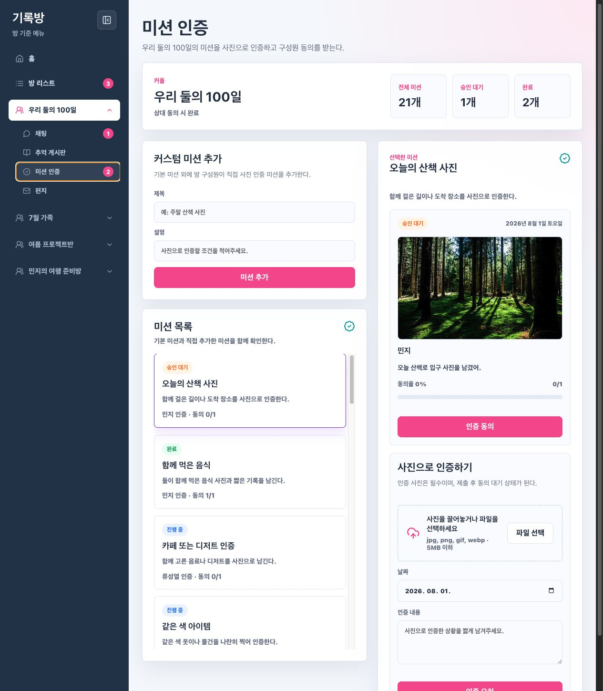

Issue #10 미션 인증 QA
AI QA 레포트
Smoke + Focused API 검증 완료. Human QA 대기 상태.
확인 결과
- 미션 인증 화면 진입, 미션 목록, 상세 패널, 커스텀 미션 입력, 사진 업로드 UI를 확인했다.
- curl로 미션 목록/생성/업로드/제출/동의 API의 해피/엣지 케이스를 검증했다.
- 검증 중 생성한 QA용 커스텀 미션은 DB에서 정리했다.
Evidence
curl 결과: docs/qa/issue-10/evidence/curl-summary.json
화면 스크린샷: docs/qa/issue-10/evidence/mission-screen-smoke.png

Human QA 체크
- 사이드바에서 선택 방의
미션 인증으로 이동한다. - 기본 미션 20개와 상태 표시를 확인한다.
- 커스텀 미션을 추가하고 목록 반영을 확인한다.
- 이미지를 업로드하고 인증 요청을 제출한다.
- 상대가 올린 인증 요청에 동의했을 때 완료 상태로 바뀌는지 확인한다.
- 사진 누락, 비이미지 업로드 같은 실패 케이스 안내를 확인한다.